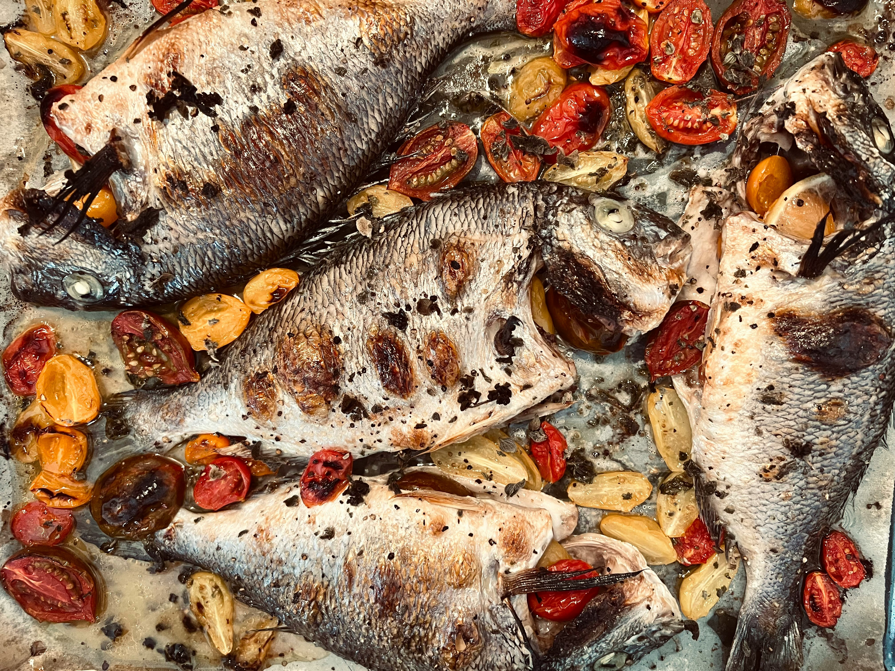

Grilled Tilapia

Description
Ingredients
- 4 Medium sized Tilapias
- 8 Tablespoons Vegetable Oil
- 4 Tablespoons Garlic Powder
- 2 Tablespoons Onion Powder
- 2 Teaspoons Ginger Powder
- 1 Teaspoon Cumin Powder
- 4 Tablespoons Cayenne Powder
- 2 Tablespoons Smoked Paprika
- 4 Maggi Chicken Cubes
- 1 Teaspoon Fish or Chicken Seasoning
- 200g Cherry Tomatoes
- Thinly chopped Parsley Leaves (Optional)
Steps
Preheat your oven or airfryer to 180 degress Celsius or 356 degrees Farenheit
- Clean and descale your fish thoroughly. Add all the ingredients in a separate bowl with the oil.
- Rub half of the marinade on all 4 tilapia fish. Cover them and leave to rest in the fridge for at least an hour.
- After marinating, rub the rest of the marinade on the fish, leave a little marinade or make extra.
- Chop the tomatoes in half and add to an oven rack, mix the chopped tomatoes with a small amount of the marinade.
- Place them on the oven rack with the tomatoes. Place in the oven or airfryer and grill for 15 minutes each side (10 minutes each side if
you're using an airfryer) until fully grilled. Remember to turn the fish over and rub more marinade as necessary.
- Remove the fish and serve.